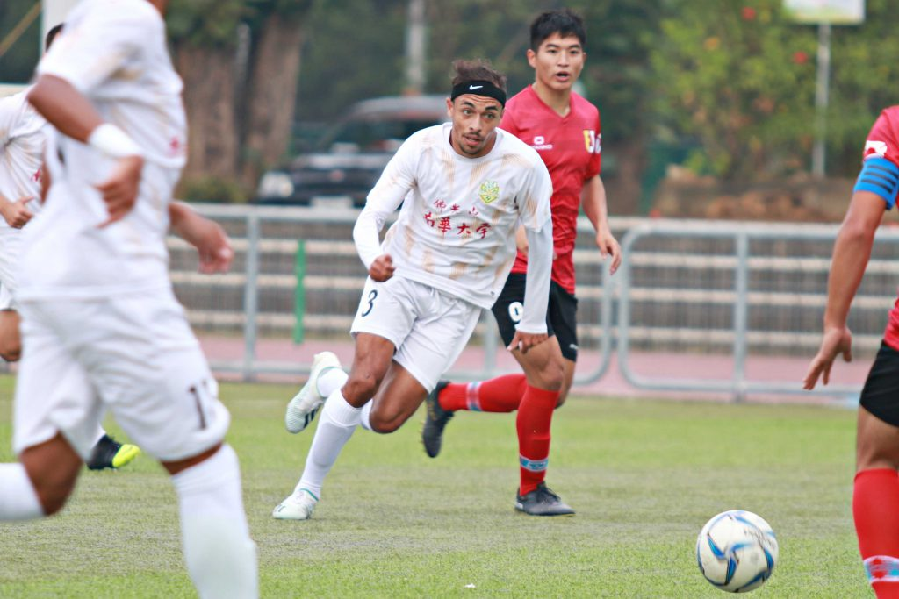
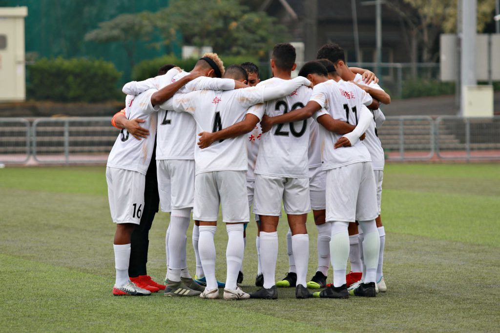
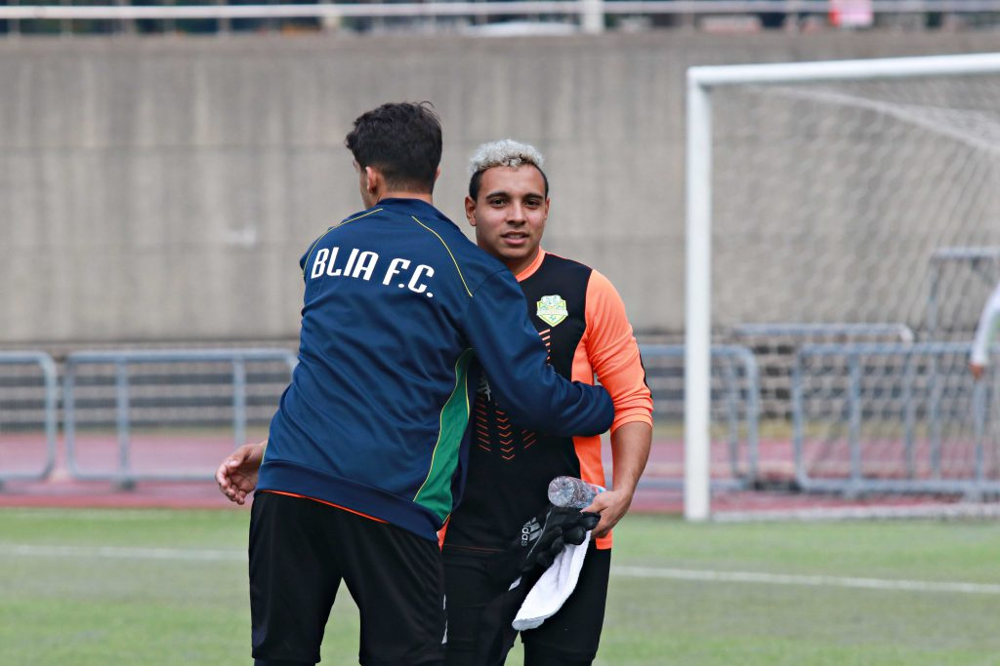

體育
重振旗鼓 南華巴西軍團展望四強
刊出日期：2019/12/27
【記者黃宥綺嘉義報導】雙方選手起跳頂球，選手在中場交戰，不讓彼此突破最後防線，教練聲嘶力竭地吶喊著，「Força！Força！（加油！加油！）」。108學年度大專校院足球聯賽於20日在吳鳳科技大學上演預賽最終戰，由南華大學組成的「巴西軍團」，出戰由本土球員為班底的輔仁大學，最終輔大以3：0帶走勝利，下一階段複賽將於27日展開，決定四強名單。
上半場雙方互不相讓，面對彼此間的壓迫性防守，遲遲無法成功越過城池一步，比賽進行至第36分鐘，輔大徐漢趁亂從右翼起腳射門，替輔大先馳得點。下半場南華未能順利發動攻勢，球隊進攻組織遭輔大破壞，南華又因犯規給予輔大周宇杰12碼罰球機會，輔大再添一分。本場比賽雙方肢體碰觸多，第53分鐘輔大劉智文再度進球，最後關頭南華無力回天，終場輔大3：0帶走勝利。

南華大學在107年大專校院足球聯賽中獲季軍，本屆賽事選手全力搶勝，盼再創佳績。 圖／黃宥綺攝
「上半場我們有很好的機會得分，但我們沒有達成。」南華的維多・烏維斯（Vitor
Alves）說道。今年大三的他擔任隊長，扛起隊上領導者的角色，「我必須讓隊友們團結一心，我會盡我最大的努力，嘗試做到最好，這是身為隊長在隊上要做的事。」他也提到平時練習時間每天約兩到三小時，有時假日仍會加強練習，對於今年的目標，他堅定地說：「我希望是冠軍，雖然是艱難的任務，但我認為我們還是有機會。」
競爭激烈的大專足球聯賽中，過去以輔大、臺北市立大學、銘傳大學及國立臺灣體育運動大學為主要四強隊伍。而去年南華闖入四強，更在季軍戰中擊敗臺體，使其他傳統球隊備受威脅。陣中球員皆來自巴西，為首支全以外籍生組成的隊伍，與本土強權硬碰頭，也成為聯賽中的一大亮點。

全由巴西球員組成的南華大學足球隊，賽前球員圍圈祈禱，期盼能拿下比賽勝利。 圖／黃宥綺攝
南華足球隊成軍已邁入第四年，在佛光山如來寺「如來之子」的教育計畫（註）培育下，巴西球員遠渡重洋來台就讀大學。成軍首年因人數不足而由五人制足球打起，接著在越來越多球員的參與下，過去兩年分別獲得第五名以及第三名，而今年新進四位來台就讀的球員，幫忙分擔守門員以及後中場的替補支援。總教練杜登盛目前帶隊兩年，他透露除語言隔閡外，對於執教上並無太大困難之處。除此之外，杜登盛亦提到今年的陣容因傷兵有做些許調整，本屆面臨重大挑戰，但仍會以四強為主要目標。對於這群巴西球員，他靦腆地說：「雖然在溝通上有困難，但他們對於足球有滿滿的興趣。」
註：佛光山巴西如來寺於2003年成立「如來之子」教養計畫，長期培育巴西學生，帶領學生來台就讀大學。
此外，因台灣與巴西的文化大不相同，在磨合上需要時間適應，雖然巴西多講葡萄牙文，但球員卻只會說英文以及簡單的中文。維多笑著說：「來台灣之前，有花時間學習中文、英文，以及學習文化、傳統，並且習慣台灣的食物，對我來說是很好的體驗。」
南華球員大多過去在巴西時曾踢過足球，對於個人技巧、基本動作有一定的熟悉度，隊長維多從七歲開始踢足球，對於這項運動並不陌生，南華陣中守門員伊古・馬努埃爾（Igor
Manoel）也分享道：「巴西的足球風格重視個人，而台灣足球則以團隊為主。」他亦提到，從去年到現在團隊歷經重大改變，原本的巴西教練因合約期滿而回家鄉，今年想要拿到好成績十分不容易。

南華大學馬努埃爾維為守門員，負責掌管得分大門，上半場結束後，與隊友相互鼓勵、打氣。 圖／黃宥綺攝
輔大教練洪慶懷則認為南華的球員在個人技術方面技巧出色，唯獨組織、戰術比較缺乏經驗。他也表示大專校院足球聯賽不該分國籍，南華對其他傳統強隊而言，具有一定的威脅性，能夠刺激本土球員，讓球員更有動力衝搶冠軍寶座。
#大學報
#南華大學
#大專校院足球聯賽
#如來之子
#巴西
#輔仁大學
#體育